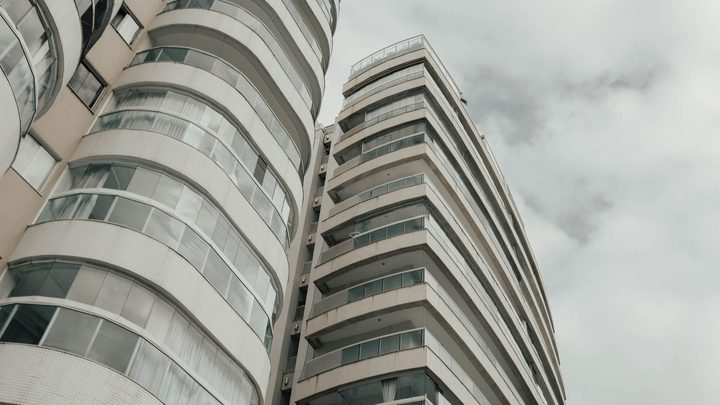
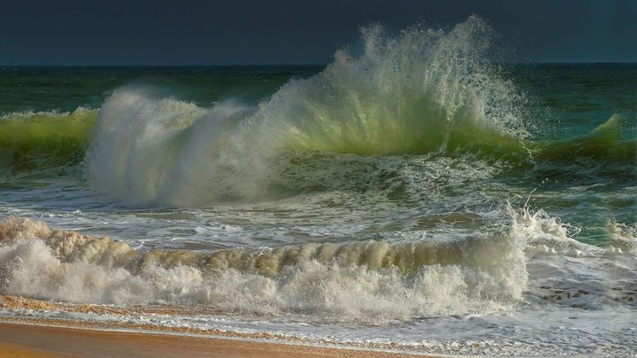
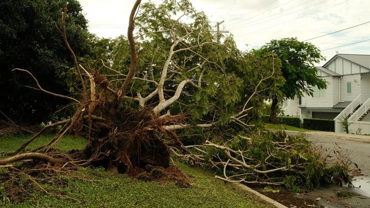
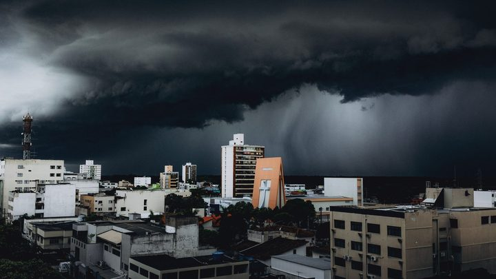
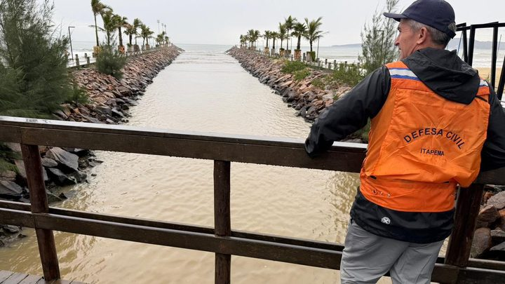
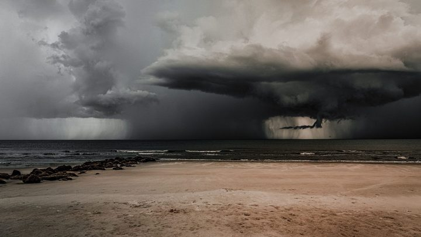
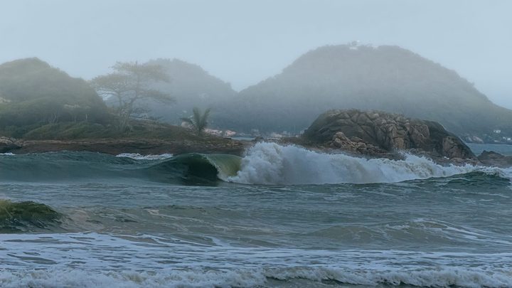

Santa Catarina · Direitos O projeto Proteção Mora ao Lado foi lançado em 31 de agosto pelo MPSC com o Secovi/SC. Traz cartaz na área comum, guia para síndico, capacitação e um selo para o prédio que aderir.
2 de setembro de 2026 
Santa Catarina · Clima A Defesa Civil espera onda de sul entre 2,5 e 3 metros, vento de 30 a 40 km/h na faixa da praia e rajada acima de 80 km/h, com risco de moderado a alto.
31 de agosto de 2026 
Santa Catarina · Clima Mais de mil casas foram danificadas, cerca de 600 em Florianópolis e 250 em Biguaçu. Porto Belo teve alagamento em via pública. O aviso da Defesa Civil vale até a madrugada de 1º de setembro.
30 de agosto de 2026 
Santa Catarina · Clima O aviso da Defesa Civil vale até a madrugada de 1º de setembro. A segunda-feira é o dia de risco alto a muito alto em todas as regiões.
30 de agosto de 2026 Santa Catarina · População O IBGE estima 214,2 milhões de brasileiros em 1º de julho de 2026, com crescimento de 0,37% ao ano. Só Roraima cresce mais rápido que Santa Catarina.
28 de agosto de 2026 
Itapema · Clima Sábado e domingo têm risco alto de temporal com granizo e rajada de vento. A orientação é não atravessar área alagada, a pé ou de carro.
27 de agosto de 2026

Santa Catarina · Clima De quarta a sexta as máximas ficam entre 25 °C e 30 °C. Na sexta entra frente fria com temporal isolado, raio e granizo.
25 de agosto de 2026
Santa Catarina · Educação A janela vai de 24 a 26 de agosto e é toda on-line. Escolher não garante a vaga: a distribuição é automática, por ordem de classificação do edital.
24 de agosto de 2026

Santa Catarina · Clima Ondulação de sul entre 2,5 e 3,0 metros e rajadas de 50 a 60 km/h. O risco moderado vale do Litoral Sul à Grande Florianópolis, de sábado a segunda-feira.
22 de agosto de 2026
Santa Catarina · Mobilidade Sentido centro-bairro, no bairro João Paulo, em Florianópolis. Das 7h ao meio-dia fecha uma faixa, e do meio-dia às 19h sobra uma só. O outro sentido segue livre.
22 de agosto de 2026
Santa Catarina · Clima O aviso nº 150/2026 prevê mínimas perto de 0°C em boa parte do estado e geada ampla nos planaltos. No Litoral e no Vale do Itajaí, entre 3°C e 8°C.
20 de agosto de 2026
Santa Catarina · Clima O aviso nº 149/2026 aponta temporal isolado com granizo e rajada entre quarta e quinta. Na quinta a instabilidade alcança todas as regiões do estado.
19 de agosto de 2026
Brasil · Segurança A pesquisa cruzou boletim de ocorrência com o calendário do futebol em cinco capitais. A conclusão é que dia de jogo virou fator de risco mensurável…
12 de agosto de 2026
Santa Catarina · Serviço Um cavado de superfície reabre a instabilidade no Sul. Na Serra, geada. No litoral, chuva e trovoada, sem o mesmo grau de alerta.
11 de agosto de 2026
Santa Catarina · Serviço Um ciclone em intensificação rápida entre o Rio Grande do Sul e o Uruguai empurra a frente fria. O maior risco está no Oeste, e o litoral entra na…
6 de agosto de 2026
Santa Catarina · Serviço Chuva com raio, rajada e granizo em todas as regiões do estado. O risco sobe na quinta e a frente fria passa na madrugada de sexta, com vendaval e…
5 de agosto de 2026
Santa Catarina · Qualidade de vida São 8,6 mortes violentas por 100 mil habitantes contra média nacional de 23. E o catarinense vive, em média, 81,1 anos. Nas duas listas, o estado…
4 de agosto de 2026